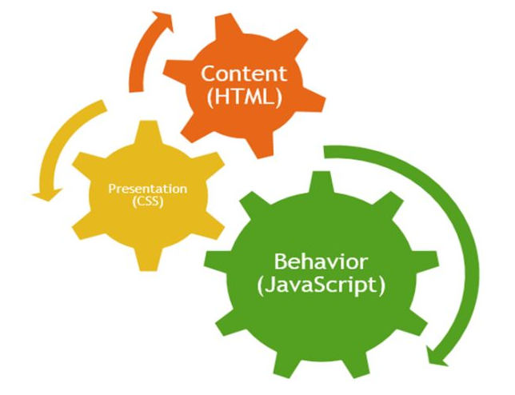
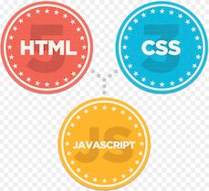

Course Overview

A brief overview of the entire course
Case Study

A review of the the evolution of a web site from simple unstyled pages to a reasonable simple but appealing layout.
Deployment

Deploying a site involves understanding a little more about Clients & Servers, Hosting Providers, Domain Names, Transferring the Sites Files, HTTP and Absolute & Relative Paths
Harp & Surge

Harp.js and Surge.sh are the two services we will use to server the page locally, and also to deploy it to a public web server.
Templates

The EJS template system implements mechanisms for assembling sites from templates - which are called 'partials' in EJS. Additionally, there is a complimentary 'layout' mechanism for reusing entire page structures.
Semantic-UI: Containers & Segments

An overview of the container and segments styles in the framework
Semantic-UI II: Grids & Images

An exploration of the Grid and Image styles.
Semantic-UI III: Tables

An exploration of the Tables
Semantic Part IV: Responsive

Our final tour of the Semantic-UI library - with a focus on icons, variations in segments and responsive grids
CSS Preprocessors: Sass & Less

Introduction to the the role of CSS Preprocessors and build tools
Semantic Part IV

Our final tour of the Semantic-UI library - with a focus on icons, variations in segments and responsive grids
JS Introduction

JavaScript, an introduction to the language of the web.
JS Basics

Continuing introduction to the language including the topics of identifiers, operators and contol flow techniques.
Arrays, Objects & Functions

JS Browser Tools

Simple JavaScript client-side applications. Introducing Chrome Developer tools.
DOM

The DOM: Javascript manipulates the contents of the web page through a standard abstraction called the Document Object Model (DOM), hence the reason for this brief introduction.
JQuery

jQuery: although not as popular as it once may have been, rumours of its death have likely been greatly exaggerated. Undoubtedly losing ground to modern frameworks. it will still probably be in widespread use for quite some time yet.
Ajax Introduction

Concluding our introduction to JavaScript with a brief discussion about Ajax.
APIs in Ajax

APIs in Node

Review the FoureSquare api and the venues end point. Show how the browser, a dedicated rest tool and a node programme can access this API
Node Essence

What is node? What is its role in modern development? We look at some key characteristics of the platform
Node Context

A look at the components of node, its versioning systems, and key advantages
Programming Node

Examine how node is programmed. Explore callback styles, modules and node program structure.
Continuous Assessment Plan

The CA plans for Enterprise Web Development and Mobile Application Development
Hapi Building Blocks

Enumerate the core building blocks of hapi and explain how these are assembled into a simple application.
Static Views

Explore how to server simple views using the Hapi Inert plugin
Templates

Extend the static view with more dynamic capabilities with the vision plugin and the handlebars templating engine.